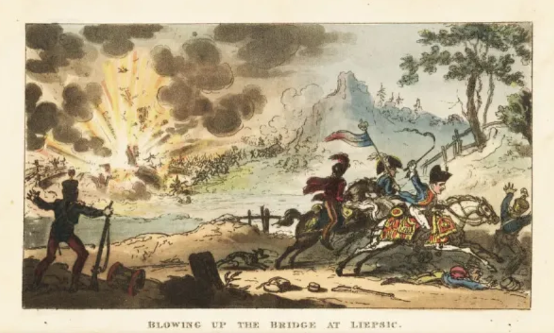
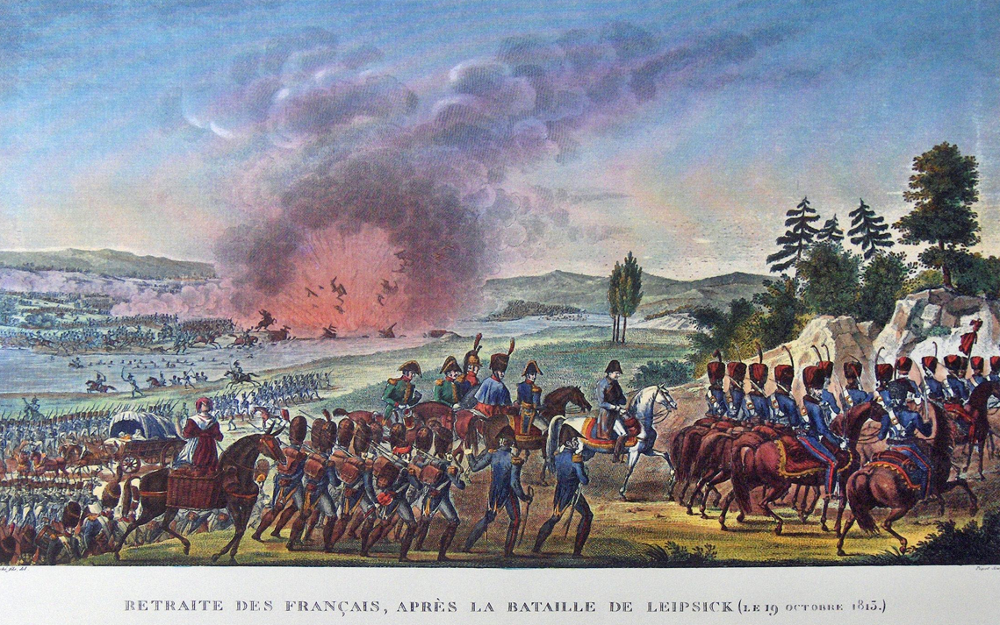
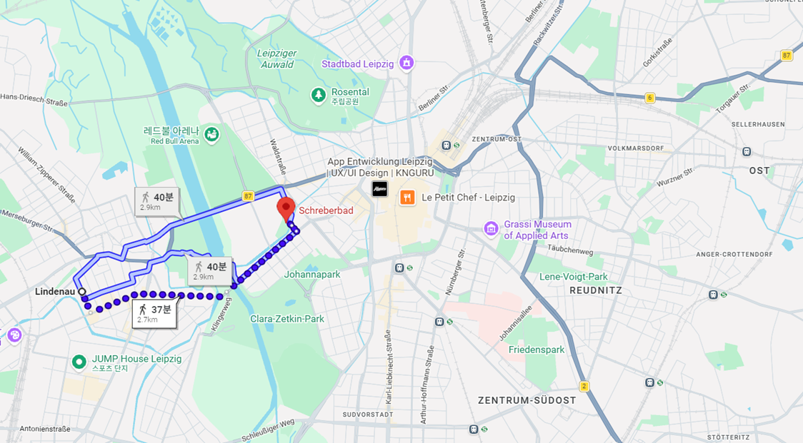
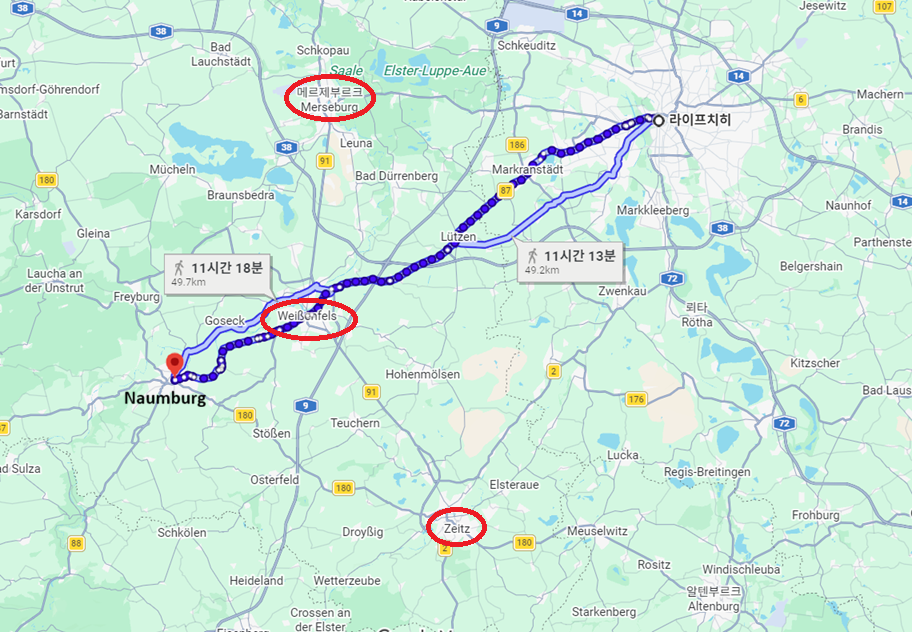
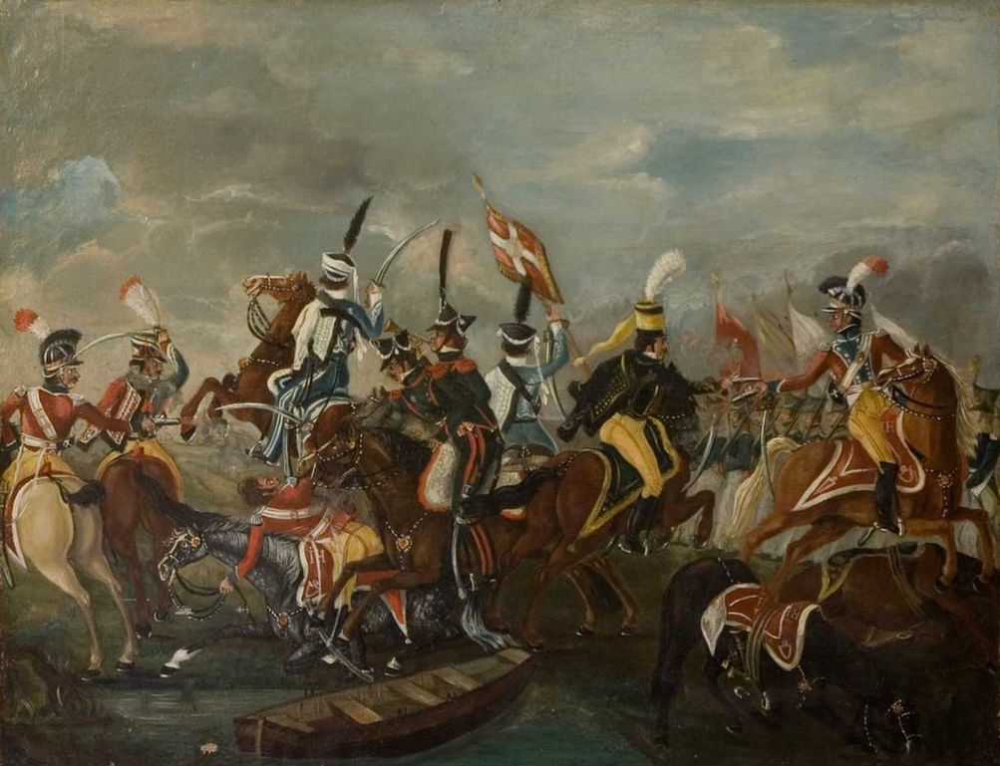
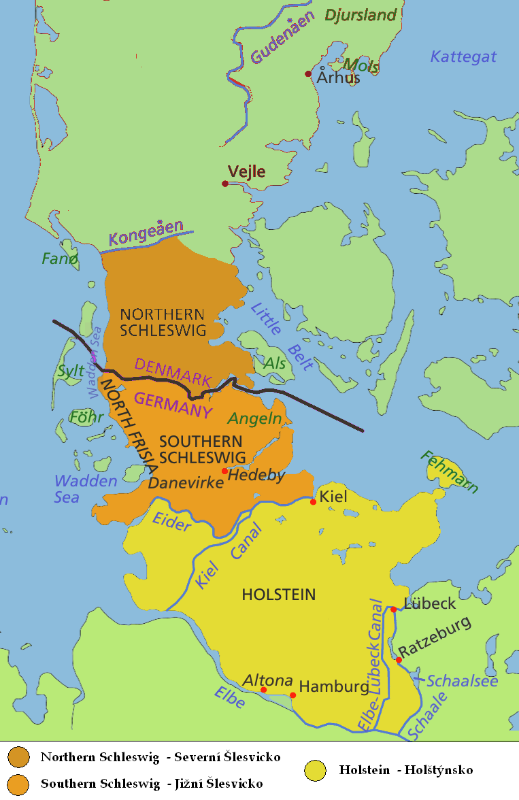
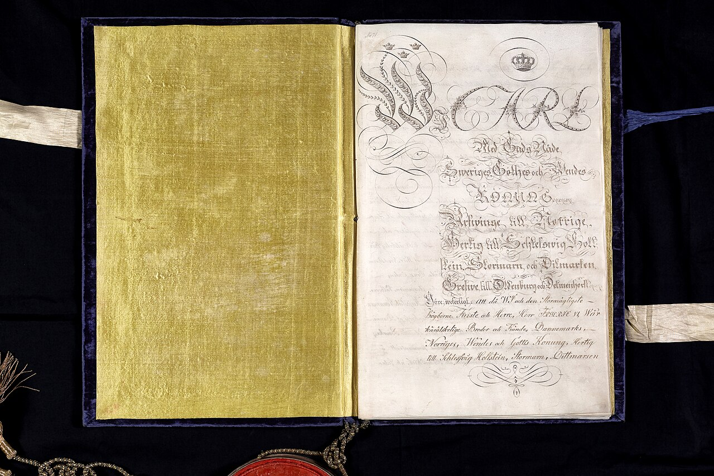
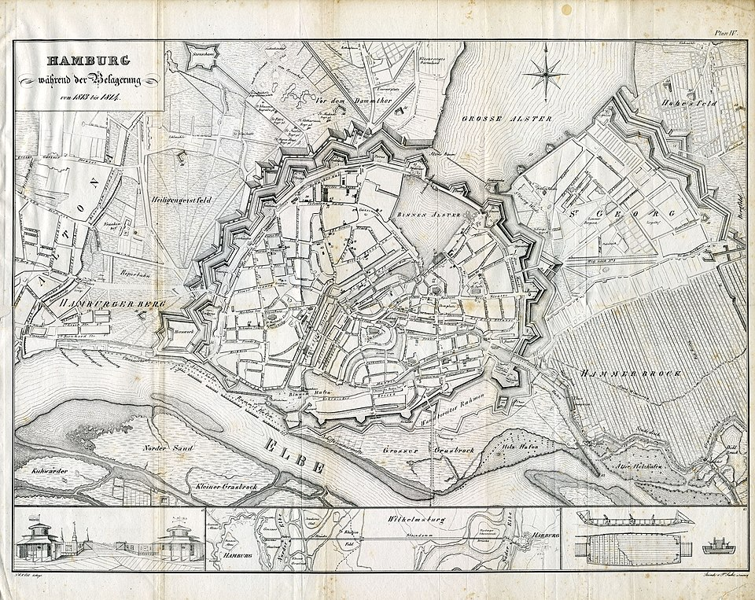
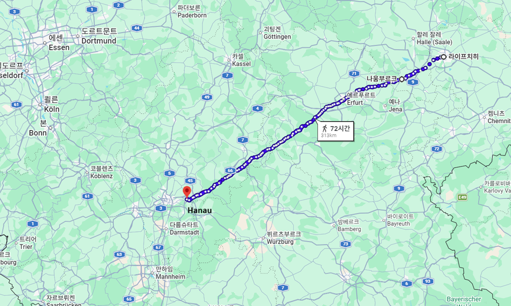

라이프치히 에필로그 (3) - 실속파 베르나도트
게시: 2026-05-18T06:30:33+09:00
10월 19일 오후 1시 경 라퐁텐 상병이 엘스터 다리를 지나치게 빨리 폭파시킬 때, 지난 밤 거의 잠을 자지 못했던 나폴레옹은 린더나우의 풍차 옆에서 깜빡 잠이 들었다가 그 폭음에 놀라 깨어났습니다. 어떻게 생각하면 나폴레옹의 탈출도 아슬아슬한 셈이었습니다. 그날 오전 9시에 마지막으로 작센 국왕 아우구스투스를 방문하여 이틀 후에 돌아오겠다는 터무니없는 호언장담을 떠들어댄 뒤, 그도 별 수 없이 라이프치히의 좁은 골목길에서 후퇴하는 병사들의 북새통 속에 끼여 간신히 란슈테트 성문을 통과하여 린더나우에 도착했는데, 그때가 오전 11시 30분 경이었습니다. 그러니까 엘스터 다리가 폭파된 것은 나폴레옹이 그 위를 건넌지 불과 2시간 반 정도 후의 일이었습니다. 다시 말하면, 만약 연합군이 란슈테트 성문 앞에 1개 사단 정도만 배치하여 그랑다르메의 후퇴를 2~3시간만 지연시켰어도 나폴레옹도 꼼짝없이 연합군의 포로가 될 수 있었다는 소리입니다.
 
(엘스터 다리의 폭파 순간의 나폴레옹을 묘사한 그림들입니다만, 실제로는 더욱 볼품없게 풍차 옆에서 졸고 있었답니다...)

(다리를 끊는 흑색화약의 폭발음이 1시간 이상 걸어갔을 나폴레옹의 귀까지 크게 들렸을까 싶은데, 당시 그 다리와 나폴레옹 사이의 거리는 2~3km 정도에 불과했으니 충분히 잘 들렸을 것입니다. 현재 엘스터강의 물길은 1813년 당시와는 많이 바뀌긴 했습니다.) 더욱 아쉬운 것은 원래 란슈테트 성문 쪽에는 1개 사단이 아니라 강력한 1개 군단, 즉 귤라이의 오스트리아 제3군단이 배치되어 있었다는 것입니다. 귤라이가 어떤 사정에 의해 거기서 물러나 나폴레옹의 퇴로를 열어주었는지에 대해서는 지난 편(https://nasica1.tistory.com/939)에 이미 상세히 적었지요. 하지만 연합군 총사령관 슈바르첸베르크가 왜 그런 어이없는 지휘를 통해 나폴레옹의 탈출을 사실상 방조했는가에 대해서는 납득할 만한 설명이 없습니다. 그렇다보니 나올 수 밖에 없는 것이 메테르니히 음모론입니다. 메테르니히는 프랑스 혁명이 만들어놓은 유럽의 변화를 모조리 되돌려놓는 반동 연합인 빈(Wien) 체제를 설계한 수구세력의 대표자였지만, 동시에 몹시 실리적인 현실 정치인이었습니다. 그는 그 해 6월 나폴레옹과 평화 협상을 벌일 때도 나폴레옹의 몰락을 막기 위해 진심으로 노력했는데, 그건 나폴레옹을 좋아해서가 아니라 나폴레옹이 여기서 이런 식으로 패망해버리면 유럽의 패권은 러시아로 넘어가버린다는 두려움 때문이었습니다. 그런 메테르니히의 관점은 해가 저무는 제국인 오스트리아 전체가 어느 정도 공유하는 것이었습니다. 슈바르첸베르크에게 메테르니히가 비밀 명령을 내려 나폴레옹의 탈출을 도왔다는 것은 아무 증거가 없는 음모론에 불과하지만, 슈바르첸베르크도 나폴레옹이 여기서 포로가 되어버리면 곤란하다는 생각을 하고 있었을 가능성은 꽤 있습니다. 오스트리아의 이런 업무상 배임 행위에 대해 누구보다 치를 떨었어야 하는 사람은 블뤼허와 그나이제나우였겠으나, 그들의 편견 섞인 혐오는 오로지 베르나도트를 향하고 있어서 나폴레옹의 탈출에 대해 오스트리아 측에 딱히 항의하지는 않았습니다. 게다가 베르나도트는 여기서 전혀 엉뚱한 일을 벌여 사람들의 의심을 스스로 샀습니다. 10월 19일 오후, 짜르 알렉산드르 등 연합군 수뇌부들이 라이프치히 중앙 시장 광장에서 만났을 때, 이들은 서로에게 환담과 공치사만 나누었던 것은 아니었습니다. 당연히 이들은 나폴레옹이 탈출한 방향으로 이제 어떻게 추격할지를 의논했는데, 기본적인 방향은 슈바르첸베르크의 보헤미아 방면군이 남서쪽 나움부르크(Naumburg)와 자이츠(Zeitz)로 진격하고, 블뤼허의 슐레지엔 방면군은 서쪽 메르제부르크, 베르나도트의 북부 방면군은 슈바르첸베르크와 블뤼허 사이로 진격한다는 것이었습니다.

(나폴레옹이 린더나우를 통해 탈출했으니, 갈 곳은 뻔했습니다. 연합군은 나폴레옹이 바이센펠스를 통해 나움부르크, 결국 에르푸르트를 거칠 것이라고 정확하게 추측했습니다. 그래도 블뤼허를 메르제부르크 쪽으로, 또 보헤미아 방면군 일부를 자이츠 쪽으로 보낸 것은 혹시라도 나폴레옹이 다른 방향으로 가는지 확인도 하고, 그게 아니더라도 그의 측면을 공략하며 괴롭히기 위해서였습니다.)
그런데 베르나도트는 그런 추격 작전 논의를 듣고 나서는 즉각 그건 곤란하며 자신은 북부 방면군을 이끌고 나폴레옹의 동맹국인 덴마크를 공격하겠다는 한밤중에 홍두깨 같은 소리를 했습니다. 실은 이게 완전히 엉뚱한 소리는 아니었습니다. 애초에 연합국 수뇌부들이 베르나도트를 꼬셔서 스웨덴의 참전을 유도할 때부터, 베르나도트는 그 대가로 덴마크의 식민지인 노르웨이를 달라고 명백하게 요구했고 그에 대해 승낙을 받았던 것입니다. 이제 나폴레옹이 사실상 재기가 불가능한 상태로 패배했으니, 이제 자신은 아직 휘하에 러시아군과 프로이센군을 거느리고 있을 때 그 전리품을 획득하러 가겠다는 소리는 어떻게 보면 현명한 요구였습니다. 게다가 덴마크는 물론, 네덜란드와 함부르크 등에 주둔한 프랑스군을 공격하고 견제해야 한다는 논리도 폈으니 정당성은 충분했습니다. 당시 베르나도트는 뮈라 흉내를 내는 것인지 마치 '오페라 가수처럼' 화려한 복장이었는데, 그런 차림으로 너무나 당당하게 그런 요구를 하여 연합국 수뇌부는 그저 침묵으로 불만을 표시했을 뿐, 크게 반발하지는 못했습니다. 베르나도트는 정말 그대로 뷜로의 프로이센 군단과 빈칭게로더의 러시아 군단, 그리고 그 동안 그토록 애지중지하며 아끼던 스웨덴 군단을 끌고 북상하여 덴마크를 공격했습니다. 그는 별로 강력하다고는 할 수 없던 덴마크군을 상대로 인상적인 대승을 거두지는 못했으나, 압도적인 병력 차이를 내세워 덴마크 남부 지역이던 홀슈타인(Holstein)과 슐레스비히(Schleswig)를 휩쓸며 점거했습니다. 덴마크 국왕 프레데릭 6세(Frederik VI of Denmark)는 그 해 크리스마스에 성명서를 내고 '슐레스비히와 유틀란트 반도를 약탈하겠다면 마음껏 해보라, 내가 어디 노르웨이를 내주나' 라며 베르나도트의 속셈에 정면으로 저항했으나, 힘의 차이는 어쩔 수 없었습니다. 무엇보다 나폴레옹이 패배하여 프랑스 본토 방어도 못하는 판국에서 덴마크가 아무리 용을 써도 이건 이길 수 없는 싸움이었습니다. 결국 덴마크는 다음 해 1월 14일, 당시 덴마크 영토이던 킬(Kiel)에서 조약을 맺고 노르웨이를 스웨덴, 아니 베르나도트에게 할양합니다.

(베르나도트가 꿈에도 그리던 노르웨이를 향한 첫 걸음, 12월 7일 보른회베드 (Bornhöved) 전투입니다. 이 전투에서는 베르나도트가 그토록 아끼던 스웨덴 기병대가 마침내 앞장 서서 전투를 치렀는데, 전투 규모는 작았지만 스웨덴군은 쾌승을 거두었습니다. 그러나 이 전투 외에는 스웨덴군은 제대로 된 승리를 거두지는 못했고, 대부분의 전투는 발모덴(Wallmoden)의 러시아군이 치렀습니다. 그리고 이 전투가 적어도 오늘날까지는 덴마크군과 스웨덴군이 교전한 역사상 마지막 전투였습니다.)

(덴마크는 나폴레옹 전쟁의 근본적인 피해자입니다. 원래 유틀란트 반도의 슐레스비히는 덴마크인들이 사는 곳으로서 덴마크 왕국의 일부라고 할 수 있었지만, 그 밑의 홀슈타인은 독일계 주민들이 사는 독일 땅이었습니다. 그런데 1460년 홀슈타인 백작이 인척 관계에 따라 슐레스비히 공작이자 동시에 덴마크 국왕이 되면서 덴마크 왕국으로 편입되게 되었습니다. 그러다 18세기 말 19세기 초부터는 홀슈타인의 독일계 인구가 늘어나면서 슐레스비히도 남부에는 독일계가 더 우세할 정도로 독일화가 진행되었습니다. 그러면서도 아무 문제 없이 지내던 덴마크에 프랑스 대혁명과 나폴레옹 전쟁의 여파로 독일 민족 운동이 펼쳐지자 왜 독일말 쓰는 홀슈타인 및 남부 슐레스비히가 덴마크 왕의 지배를 받아야 하느냐는 근본적인 불만이 터져나오기 시작했습니다. 결국 1864년, 프로이센의 비스마르크가 주도한 제2차 슐레스비히 전쟁에서 패배한 덴마크는 홀슈타인과 슐레스비히를 프로이센에게 빼앗기게 됩니다. 다만 WW1에서 패전국이 된 독일은 1920년 주민 투표를 통해 덴마크인들이 더 많이 살던 북슐레스비히는 덴마크에 반환했고, 그러면서 현재의 국경선이 완성되었습니다.)

(킬 조약서입니다. 이것도 원문은 아니고 다시 찍어낸 카피본이라고 하네요.) 이렇게 베르나도트는 실속만 챙기고 나폴레옹 전쟁의 주된 물줄기에서는 벗어나게 됩니다. 킬 조약을 맺은 뒤에도 다시 남하하여 프랑스 침공에 참전할 시간적 여유는 충분했으나 그는 네덜란드에서만 머뭇거릴 뿐 결국 프랑스 본토로는 발을 들이지 않았습니다. 이유는 프랑스인으로서 프랑스를 침공하는 것에 대한 양심적 거리낌과 함께, 아예 나폴레옹을 폐위시킨 뒤 베르나도트를 프랑스 왕으로 책봉하려는 움직임이 짜르 알렉산드르를 중심으로 일어나기도 했기 때문입니다. 이제 향후 프랑스 국왕으로서 프랑스인들을 다스리려면 적어도 프랑스 본토를 침공하는데 손에 피를 묻혀서는 안되겠다는 생각에서였지요.

(이 그림은 1813~1814년의 함부르크 포위전 상황도입니다. 동료 원수였던 다부가 지키던 함부르크에 대한 포위전도, 베르나도트 휘하의 러시아군 발모덴이 주로 수행했고 총지휘자도 곧 베니히센으로 교체되었습니다. 베르나도트는 정말 실속만 챙겼을 뿐 프랑스나 옛 동료에 대해서는 어지간하면 척을 지지 않으려 했던 셈입니다.) 짜르 알렉산드르 등 연합군 수뇌부가 베르나도트의 이런 전선 이탈을 그토록 순순히 받아들인 것이 매우 이상할 수 있습니다. 그런데 당시에는 그런 결정이 전혀 이상하지 않았습니다. 그때까지만 해도 연합군의 목표는 라인연방 해체에 따른 독일 해방과 나폴레옹을 프랑스-독일 사이의 자연 국경인 라인강 너머로 쫓아내는 것일 뿐, 파리 점령이나 나폴레옹 폐위까지는 생각하고 있지 않았기 때문이었습니다. 이제 나폴레옹이 프랑스를 향해 도주 중이었으니, 연합군은 슬슬 그 뒤를 쫓으며 토끼몰이만 하면 되었던 것입니다. 게다가 연합군은 나폴레옹이 라인강을 넘기 전에 그에게 치명타를 안겨줄 수도 있는 한 방을 준비해놓고 있었습니다. 이미 나폴레옹에 대해 선전포고를 해놓고 오스트리아 증원군까지 받아둔 채 나폴레옹이 도망쳐 오기를 기다리고 있던 하나우(Hanau)의 바이에른군이었습니다.

(라이프치히에서 프랑크푸르트 인근의 하나우까지는 300km가 넘는 거리입니다.) Source : The Life of Napoleon Bonaparte, by William Milligan Sloane Napoleon and the Struggle for Germany, by Leggiere, Michael V With Napoleon's Guns by Colonel Jean-Nicolas-Auguste Noël https://www.historyofwar.org/articles/battles_leipzig_19_october.html https://warhistory.org/@msw/article/leipzig-battle-of-the-nations https://www.encyclopedia.com/history/encyclopedias-almanacs-transcripts-and-maps/leipzig-battle-0 https://warfarehistorynetwork.com/article/death-knell-for-napoleons-empire/ https://www.napoleon-series.org/military-info/battles/leipzig/c_leipzigoob10.html http://napoleonistyka.atspace.com/Leipzig_battle_of_the_Nations.htm https://en.wikipedia.org/wiki/Treaty_of_Kiel https://en.wikipedia.org/wiki/Dano-Swedish_War_(1813%E2%80%931814) https://en.wikipedia.org/wiki/Siege_of_Hamburg https://en.wikipedia.org/wiki/Schleswig-Holstein